地政学
サンサルバドルは中米北部の小国首都です。太平洋、米国移民圏、グアテマラ、ホンジュラスを結ぶ政治と商業の節点にあり、治安、送金、気候災害、地域統合を調整します。火山の谷から国外へ開く都市です。今も要です。
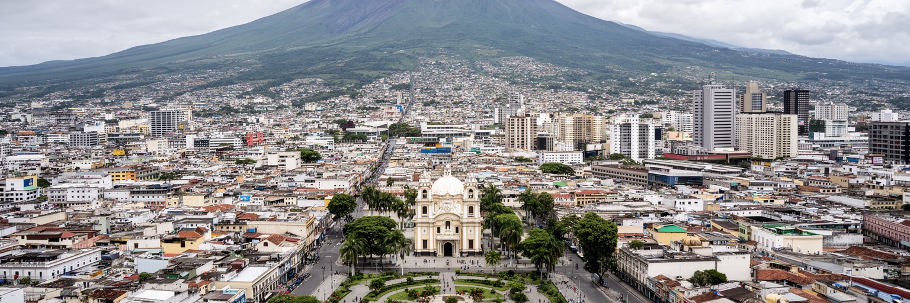
🇸🇻 エルサルバドル / 中央アメリカ / World City Atlas
火山の谷に広がる首都は、国家政治、商業、送金経済、信仰、治安政策、旧市街再生、若い労働力の日常を、短い距離の中に重ねています。
都市の骨格
サンサルバドルは、火山と丘陵に囲まれた中央高地の盆地にあります。旧市街、官庁、商業軸、住宅地、バスターミナル、市場、大学、郊外自治体が密に連なり、中米の小国首都として大きな役割を担います。
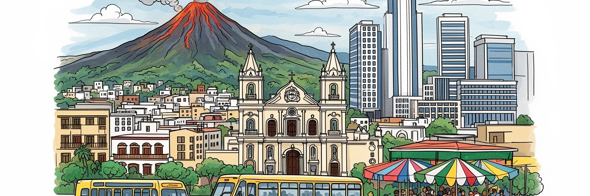
サンサルバドルは中米北部の小国首都です。太平洋、米国移民圏、グアテマラ、ホンジュラスを結ぶ政治と商業の節点にあり、治安、送金、気候災害、地域統合を調整します。火山の谷から国外へ開く都市です。今も要です。
官庁、銀行、小売、通信、教育、医療、物流、外食、コールセンターが雇用を作ります。家計には米国などからの送金も大きく、働く場は国内市場と移民ネットワークに支えられます。非公式労働も多い都市です。日々動きます
カテドラル、ロメロ大司教の記憶、福音派教会、先住民文化、独立広場、音楽、屋台、サッカーが都市の感情を作ります。内戦の傷と信仰の言葉が、広場や壁画や家族の物語に残ります。祈りは今も公共的です。深く響きます。
旧市街再生や火山観光は魅力を増していますが、通勤混雑、住宅格差、暑さ、地震、治安政策の影響、若者の進路は日常の論点です。観光客の視線だけでなく、働き通う人の街として読む必要があります。生活が主役です。
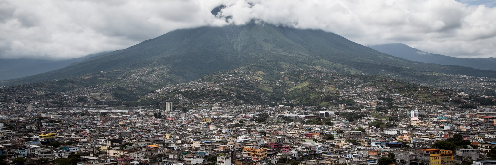
サンサルバドルの第一の輪郭は、火山と谷です。市街地はサンサルバドル火山、セロ・サンハシント、周辺の丘陵に囲まれ、緑の斜面と密な都市化が近い距離で向き合います。標高があるため海岸より暑さは和らぎますが、乾季の強い日差し、雨季の激しい雨、土砂災害、地震、火山性の地形は常に都市計画の前提です。旧市街から西側の商業地区、郊外自治体へ伸びる道路は、盆地の限られた平地を使いながら発展してきました。眺望の美しい丘は住宅地や商業開発を引き寄せますが、斜面の開発は排水、交通、災害リスクを増やします。火山は観光資源であると同時に、都市の脆弱性を見せる存在です。住民にとっては、山の見える日常、涼しい朝、渋滞する谷底、雨で急に流れる道路、地震への備えが一つながりになっています。サンサルバドルを読むには、政治や治安だけでなく、地形がどこに富を集め、どこに危険を押しやり、どの道を混ませるのかを見る必要があります。都市の成長は火山の斜面を消すことではなく、水の通り道、緑地、避難路、公共交通を守りながら谷の限界を理解することにかかっています。見晴らしのよい開発地と、谷底の混雑した生活圏を同じ地図で見ると、自然条件が社会格差を強める仕組みも分かります。火山は背景ではなく、首都の毎日の判断を迫る近い隣人です。暮らしにも近いです。
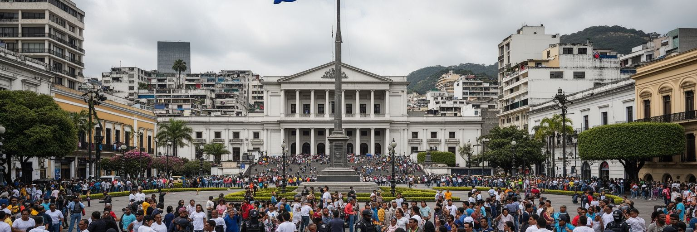
サンサルバドルは、エルサルバドルの国家機能が最も濃く集まる場所です。行政機関、議会、司法、中央銀行、外交機関、大学、報道機関が首都圏にあり、政策の決定はすぐ雇用、警備、交通、広場の使い方に反映されます。近年の治安政策は国内外の注目を集め、犯罪の恐怖が軽くなったと感じる住民がいる一方、非常事態、拘束、司法手続き、人権をめぐる議論も強く残ります。首都はこの変化を最も見えやすく受け止めます。警察や軍の存在、再開発された広場、観光客を呼び戻す旧市街、夜に歩ける場所の拡大は、政治的な成果として語られますが、同時に監視、排除、貧困地区への影響を問う声もあります。小国の首都では、政治指導者の発信、SNS、国外の金融市場、移民社会の反応が短時間で結びつきます。サンサルバドルの中心部を歩くと、国家が安全と秩序をどう見せたいのかが空間に表れます。都市を理解するには、治安の改善を単純に称えるだけでも、政治を抽象的に批判するだけでも足りません。住民が何を安心と感じ、何を恐れ、どの制度に声を届けられるのかを、広場、裁判所、バス停、学校、商店の現実から読む必要があります。首都では政策が遠いニュースではなく、検問、道路規制、家族の面会、商店の営業時間として現れます。その近さが、政治への期待と緊張を同時に大きくしています。
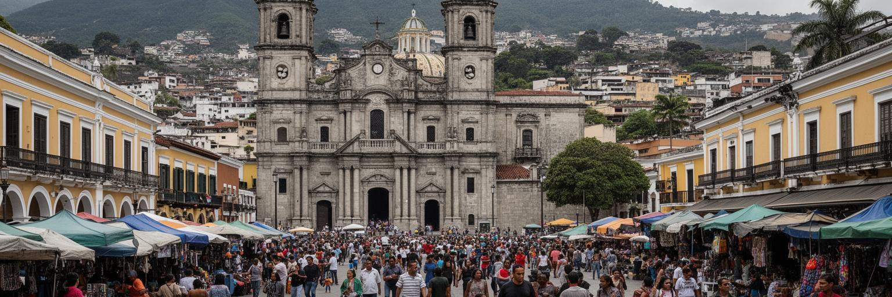
サンサルバドル旧市街は、独立、宗教、商業、内戦、再生が重なる都市の記憶装置です。メトロポリタン大聖堂、国立宮殿、国立劇場、中央市場周辺の店、中央広場は、国家の儀礼と庶民の買い物が接する場所として機能してきました。大聖堂はオスカル・ロメロ大司教の記憶と結びつき、内戦期の暴力、貧困、信仰、社会正義を考える入口になります。かつて旧市街は治安不安や商業の衰退で避けられる場所でもありましたが、近年は歩行空間の整備、広場の清掃、警備、イベント、観光案内によって、再び訪問者を呼び込む場所になっています。ただし再生は単にきれいにする作業ではありません。露天商、バス利用者、周辺の低所得世帯、宗教行事、記憶の場がどのように残るかが問われます。旧市街から非公式な働き方や政治的な記憶を押し出すなら、都市の歴史は薄くなります。サンサルバドルの中心部には、コロニアルな建築だけでなく、地震で失われた建物、戦争の傷、移民で離れた家族、再開発に期待する若者の時間もあります。広場に立つと、教会の鐘、警備の無線、揚げ物と果物の匂い、修復されたファサードが同時に届きます。そこに、首都が何を忘れず、何を新しく見せようとしているかが現れます。写真を撮る観光客と、商品袋を抱えて通る商人が同じ歩道を使う時、旧市街は展示物ではなく、生きた交渉の場所になります。
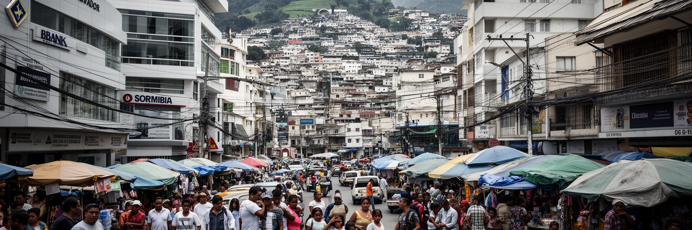
サンサルバドルの経済は、国内の官庁と企業だけで完結しません。米国を中心とする移民社会からの送金は、多くの家計の消費、住宅改修、教育、医療、商店の売上を支え、首都の銀行、送金窓口、通信、ショッピングモール、建設、サービス業に流れ込みます。西側の商業地区にはオフィス、ホテル、飲食、金融機関、コールセンター、国際企業の拠点が集まり、旧市街や市場では小規模商人、屋台、家族経営の店が日々の経済を作ります。メトロセントロやエスカロンの買い物は中間層の週末を映し、バス停近くの露店は学生や高齢者の小さな支出を受け止めます。国外で働く親族の仕送りが子どもの学費や小さな起業資金になり、国内の雇用不足や低賃金が新たな移住を促す循環もあります。ドル化された経済は為替リスクを減らす一方、金融政策の自由度や生活費の調整には制約を与えます。都市の商業は活気がありますが、非公式労働、若者の不安定な雇用、交通費、治安対策の費用、家賃の上昇が家計を圧迫します。サンサルバドルを商業都市として見る時、銀行ビルやモールだけではなく、送金を受け取る窓口、市場で仕入れる人、夜勤のコールセンター、国外にいる家族との通話まで含める必要があります。都市の消費は、国境を越えた家族の労働に支えられています。商店の売上や住宅改修には、遠い都市で働く移民の時間が混ざっています。
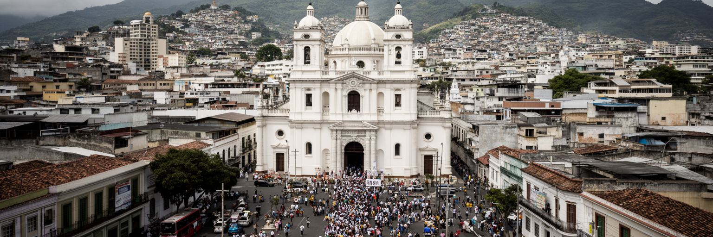
サンサルバドルの宗教文化は、カトリックの大聖堂、地域の教区、福音派教会、家庭の祈り、記念碑、音楽、慈善活動を通じて都市生活に深く入り込んでいます。特にオスカル・ロメロ大司教の記憶は、内戦期の暴力と貧しい人びとの声を考えるうえで欠かせません。彼の存在は単なる宗教史ではなく、国家暴力、社会的不平等、人権、和解を語る公共の言葉として、首都の広場や教会に残ります。日曜日の礼拝、聖週間の行列、八月の守護聖人祭は、家族と近隣を結び、移民で離れた家族を思い出す時間にもなります。一方、エルサルバドル社会では福音派教会の影響も大きく、若者の更生、薬物、家庭、政治的価値観をめぐる活動が広がっています。礼拝の歌やラジオ説教、SNSで共有される祈りは、家の中と公共空間をつなぎます。サンサルバドルでは、暴力を経験した地域、拘束された家族を持つ人、移住を考える若者、貧困地区で活動する団体が、それぞれ異なる形で信仰の言葉を使います。観光客が大聖堂や記念碑を見る時、建物の美しさだけでなく、そこで語られてきた痛みと希望を聞く姿勢が必要です。祈りは過去を飾るものではなく、今も都市が正義と安全の意味を考えるための深い回路です。葬儀、記念ミサ、家族の食卓で交わされる祈りも、公共の歴史を個人の記憶へつないでいます。鐘の余韻は街の沈黙にも残ります。
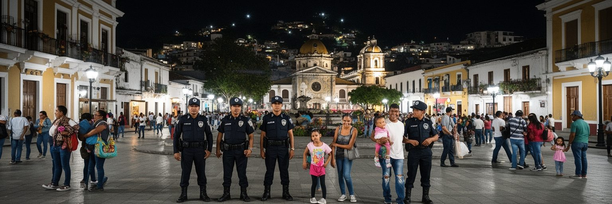
サンサルバドルを語る時、治安は外せません。長くギャング暴力、恐喝、通勤時の不安、地域の境界、夜間外出の制約が都市生活を形づくってきました。近年は強力な治安政策によって殺人や恐怖が大きく減ったとされ、旧市街や観光地、商業地区では家族連れや訪問者が増えたと感じられます。公共空間を使えることは、都市の自由を広げます。広場で遊ぶ、夜に食事をする、バスで移動する、市場で商売を続けることは、数字以上に大きな変化です。しかし安全の回復がどの制度で支えられ、誰の権利を制限し、どの地域に負担を置いているのかも問われます。大量拘束、刑務所、裁判手続き、誤認、若者への監視、人権団体の懸念は、首都の政治的な会話に残ります。都市の安全は、警備だけでなく、学校、雇用、交通、住宅、地域の信頼、公共照明、司法へのアクセスによって保たれます。恐怖が減った空間をどう市民のものにするかが次の論点です。サンサルバドルの公共空間は、かつて避けられた場所が再び歩かれる喜びと、強い国家権力への不安を同時に抱えます。街の変化を読むには、訪問者の安心感だけでなく、周辺地区の若者、露天商、家族を待つ人、拘束された人の親族の声にも注意を向ける必要があります。安全は目的地ではなく、働き、学び、集まる自由を広げるための条件として評価されるべきです。
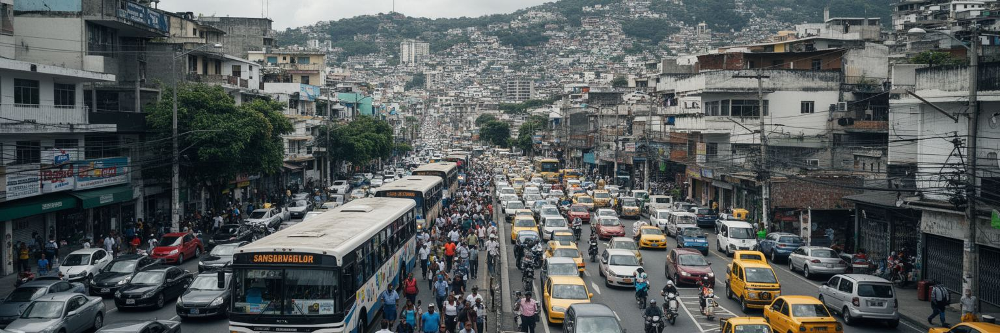
サンサルバドルの日常は、首都圏全体の移動に支えられています。市域だけでなく、メヒカノス、ソヤパンゴ、サンタテクラ、アンティグオ・クスカトラン、アポパなど周辺自治体から多くの人が通勤、通学、通院、買い物のため中心部へ向かいます。バスやミニバスは生活の足ですが、混雑、乗り継ぎ、運行の安全、道路渋滞、歩道の不足が時間と体力を奪います。自動車を持つ中間層は商業地区や郊外モールを利用しやすい一方、低所得層は長い移動と交通費を負担します。谷の地形は幹線道路を限られた通路に集中させ、雨や事故で混乱が広がりやすくなります。都市の移動は経済の見えにくい基盤です。早朝に市場へ向かう人、制服で学校へ通う子ども、夜勤を終えるコールセンターの労働者、病院へ向かう高齢者が、同じ道路とバス停を使います。公共交通が不安定なら、雇用や教育の機会は狭まります。首都圏の課題は、市境ごとに解けるものではありません。住宅開発、バス路線、歩行者空間、治安、排水、災害避難を広域で考える必要があります。サンサルバドルの都市らしさは、中心部の広場だけでなく、毎日中心へ向かう人の流れによって作られています。移動の負担を軽くすることは、都市の格差を小さくする政策でもあります。乗り換えの分かりやすさや歩道の日陰は小さく見えて、家計と安全を支える重要な公共財です。
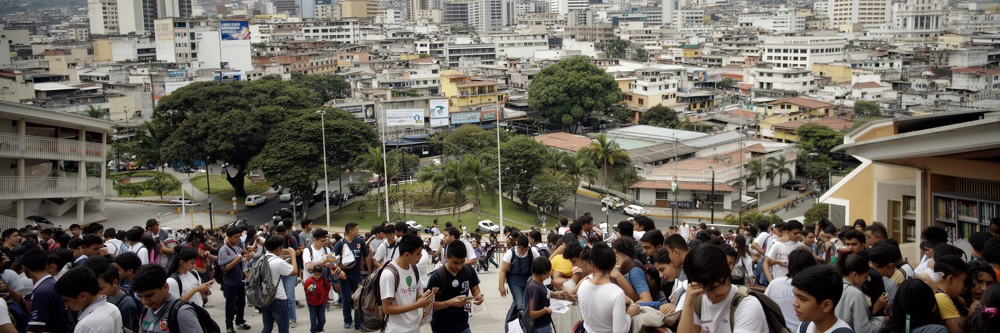
サンサルバドルは、エルサルバドルの若い世代が教育と仕事の出口を探す都市です。国立大学、私立大学、専門学校、語学学校、職業訓練、IT関連の仕事、コールセンター、医療、公共部門が集まり、地方から来る学生や若い労働者を受け入れます。英語力やデジタル技能は、国内の雇用だけでなく国外移住、リモートワーク、家族の送金ネットワークとも結びつきます。一方で、学費、交通費、家計への貢献、治安への不安、就職口の少なさは、進路選択を厳しくします。多くの若者にとって、首都は可能性の場所であると同時に、競争と不安の場所です。エスタディオ・クスカトランの代表戦、アリアンサFCの応援、フットサルの小さな試合、ライブバーのロックやレゲトンは、勉強と仕事の間にある発散の場です。安全になった広場や夜の外出を新しい自由として感じる人もいれば、監視や政治的同調圧力を心配する人もいます。教育機関は知識を与えるだけでなく、公共的な議論、文化活動、社会参加の場にもなります。サンサルバドルの未来は、若者が国内に残って働けるか、起業できるか、自由に表現できるか、家族を支えながら学べるかに左右されます。都市の成長を測るには、ビルや道路だけでなく、学生が安全に通い、職業を選び、国外へ出る以外の選択肢を持てるかを見る必要があります。図書館、公共広場、安い交通、文化イベントは、若者が首都を自分の場所として感じるための基盤です。
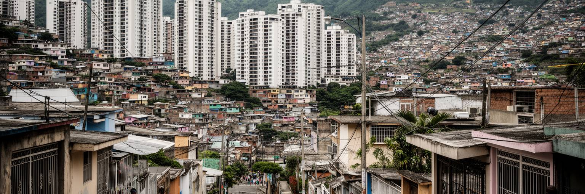
サンサルバドルの住宅地は、都市の格差をはっきり見せます。西側や丘陵部には商業施設に近い中上位層の住宅、門のある地区、マンション、オフィスに近い新しい開発があり、一方で周辺自治体や谷の低地、斜面には密度の高い住宅、インフォーマルな増築、災害に弱い地区もあります。家賃や土地価格は通勤時間、治安、学校、排水、道路、眺望によって大きく変わります。移民からの送金は住宅改修を可能にしますが、すべての世帯が恩恵を受けるわけではありません。地震国であるため、建物の耐震性、斜面の安定、避難路、老朽住宅の改修は生活の安全に直結します。貧しい地区ほど災害に弱く、交通費も高くなりやすいという重なりがあります。治安が改善しても、住民が十分な収入、学校、医療、公共交通、緑地を得られなければ、都市の不平等は形を変えて残ります。旧市街の再生や観光地化も、中心部の居住をどう扱うかによって意味が変わります。住む人が押し出され、商業とイベントだけが残るなら、首都は生活の厚みを失います。サンサルバドルの住まいを考えることは、火山の斜面に家を建てる危険、若い家族の家賃、移民家族の仕送り、公共住宅、都市計画の公平性を同時に考えることです。家は単なる建物ではなく、都市に残れる権利の形です。安全な住まいを増やすことは、治安政策と同じくらい長期的な安心を作ります。
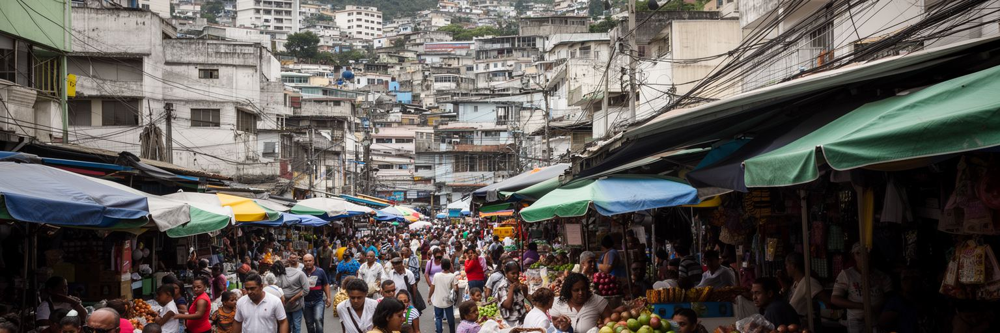
サンサルバドルの生活感は、市場と食べ物からよく見えます。ププサ、豆、チーズ、チチャロン、タマル、果物、コーヒー、屋台の飲み物は、家庭の食卓と外食の間をつなぎます。市場では地方から届く農産物、日用品、衣料、携帯電話用品、宗教用品が並び、商人、買い物客、配達、清掃、警備が朝から都市を動かします。子どもは甘い飲み物や揚げ菓子をねだり、高齢者はなじみの店で少量ずつ買い、値段と天気の話を交わします。モールやチェーン店が広がっても、市場と小さな食堂は多くの住民にとって価格と人間関係の面で欠かせません。食は移民社会とも結びつきます。国外の家族へ送る味、帰国時に食べたい料理、送金で開く小さな店、米国風の外食文化が、首都の味を変えていきます。観光客にとってププサは分かりやすい入口ですが、食文化を単なる名物として消費すると、働く人の長時間労働、原材料価格、屋台規制、衛生管理、公共空間の利用を見落とします。市場は都市の経済を支える一方、火災、混雑、交通、治安、再開発の圧力にもさらされます。サンサルバドルの食を読むことは、農村と首都、国内と移民先、家庭と商業、女性の労働と都市政策を結びつけることです。広場の近くで湯気を上げる鉄板や、朝の市場で交わされる会話には、首都の政治や金融とは違う、しかし同じくらい重要な都市の基礎があります。食卓は、国の外へ広がった家族を首都へつなぎ直します。
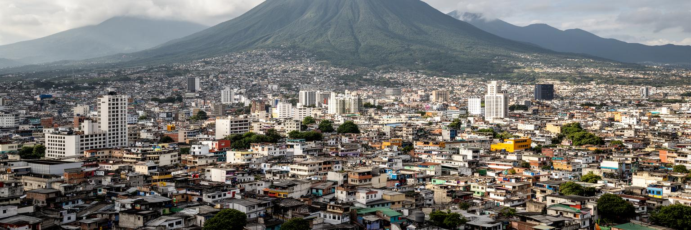
サンサルバドルを読む面白さは、都市の多くの問題が互いに切り離せないところにあります。火山の谷という地形は、交通、住宅、災害、眺望、観光を決めます。国家政治は、治安政策、公共空間、国際金融、移民社会の評価に直結します。旧市街の広場には、独立、信仰、内戦、再開発、露天商、観光客の時間が重なります。商業地区の明るさは、国内市場と国外送金に支えられ、若者の教育と移住の選択にもつながります。都市を単に危険だった場所、または急に安全になった場所として語ると、生活の細部を見落とします。住民にとって重要なのは、夜道の安心、家賃、学校、仕事、バス、家族の送金、災害時の避難、祈りの場、休日の食事がどう変わるかです。サンサルバドルは巨大な世界都市ではありませんが、中米の不平等、移民、治安、宗教、ドル化、気候リスク、若い人口の希望を濃く映します。訪れる人は、火山の展望や旧市街の建築だけでなく、ラジオやSNSの政治談義、サッカーの歓声、夜の音楽、雨上がりの舗道の匂いにも耳を向けると都市が深くなります。首都は国家の顔であると同時に、家族の選択が積み重なる生活圏です。未来は、強い秩序を見せるだけでなく、住民が自由に働き、学び、集まり、過去を語り、国外へ出る以外の希望を持てるかにかかっています。都市の価値は、外からの評判だけでなく、住民が明日もここで暮らしたいと思える条件の厚みによって決まります。